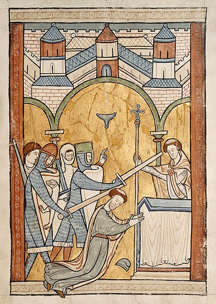
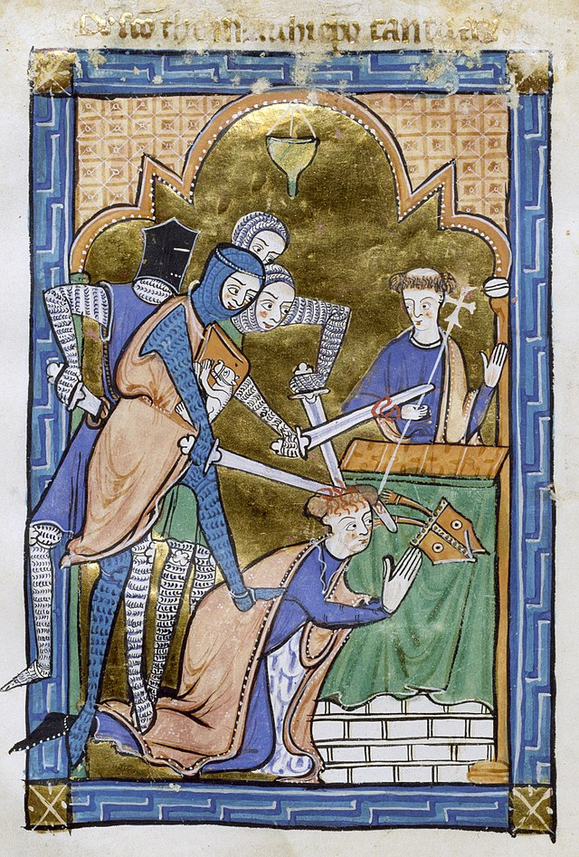

Introduction: 1066 and onwards
When William of Normandy conquered England in 1066, he claimed the right to have full control over the church. He deposed many bishops and installed Norman bishops in their place, in order to consolidate his own power.
However, William also needed the support of the church. Therefore, he did not depose all of the Anglo-Saxon religious clergy. He allowed many to retain their posts as long as they swore an oath of allegiance to him. John of Worcester, an English monk and chronicler, gave an account of William's actions towards the church.
"Archbishop Ealdred, Wulfstan...Walter...came to meet him...made him their submission and swore fealty to him."1
Case study of Henry II and Thomas Becket

The Murder of Becket in Canterbury Cathedral
Henry II was the King of England between 1154 and 1189 CE. He was famously known for his bad temper. Henry appointed Thomas Becket, who had initially been his Chancellor, as the Archbishop of Canterbury in 1162. What began as a cordial relationship between them, quickly ended up with intense anger at each other. The conflict which arose, was a result of a struggle for power between Becket who represented the church, and Henry II who represented the kingdom.
The Reasons behind the conflict
Henry II, like his predecessors, wanted complete authority over his kingdom. Furthermore, he wanted the church to be completely under his control as he stated in the Constitutions of Clarendon, in 1164. And so, he began taking actions which caused the strain between him and Becket. One of those actions was claiming that his courts should have jurisdiction over members of the clergy. He wanted religious clergy to be tried in his courts.
A letter from Thomas Becket to Henry II in the year 1165 really indicates how Thomas Becket chafed over this.
"The Church of God is composed of two orders – the clergy and the people. Among the clergy are the Apostles and the Apostolical men, the bishops and other rulers of the Church, to whom has been entrusted the care and government of that Church, and who have the management of ecclesiastical concerns, that they may cause all things to tend to the salvation of souls... In the number of the people are kings, dukes, earls, and other potentates, who have the management of secular business, that they may cause it entirely to tend to the peace and unity of the Church. And, inasmuch as it is certain that kings receive their power from the Church, and not it from them, but (with your leave I say it) from Christ, you ought not to give your commands to bishops to absolve or to excommunicate any person, to bring the clergy before secular courts, to pronounce judgment relative to tithes and churches, to forbid bishops taking cognizance of breaches of faith or vows in such manner as is here set forth in writing among your customs, which you style the laws of your grandfather."2
Another action which Henry II took, was anointing his son Henry as his heir against the repeated commands of the Pope Alexander in 1170. This did not simply anger Becket, but also many others, for example John of Salisbury (philosopher and also an associate of Thomas Becket), who wrote letters to monks of Canterbury, requesting them to remain loyal to the church and to support Becket in his dispute against the King.3
Consequences of the conflict
There were many consequences to this conflict. Those who opposed the King had their properties taken. Fearing repercussions, they fled England. Becket himself fled England for six years and lived in France, between 1164 and 1170.
This conflict also caused a rift amongst church authorities. On the one hand, there were those who backed Becket. On the other hand, there were those who supported Henry II, and blamed Thomas Becket for worsening the relationship between the church and kingdom. This was something Gilbert Foliot, the Bishop of London, implied in his condemning letter to Becket in 1166:
“They (the Church and Kingdom) did not oppose one another... everything was turned upside down because of your sins... a man of your prudence should have ensured that the disagreements gradually arising between the kingdom and you did not grow too serious, that the tiny spark did not flare up to so great a fire, to the ruin of many.”4

Yet another portrayal of Becket's martyrdom (from c. 1250)
While Foliot may have blamed Becket, and overlooked previous tensions between the church and kingdom, his letter certainly reveals how tense the relationship had become.
Pope Alexander- the pope at the time- made attempts to reconcile the king and Becket, and briefly succeeded in 1170, after which Becket returned to England. However, Becket who was angry at the archbishops who had been present in the coronation of Henry II's son, excommunicated them just before he returned to England. The archbishops loyal to the king, complained to him, thus reigniting the conflict.
All of this finally culminated in Thomas Becket's murder by knights who, after an angry outburst from Henry II, took it upon themselves to murder Thomas Becket.
For a man who was very controversial during his life, Thomas Becket was canonised as a saint after his murder. Canterbury Cathedral became a place of pilgrimage. And, to show that he maintained his relationship with the church, a repentant King Henry II visited the shrine of Thomas Becket as a pilgrim, in the year 1174.
Conclusion
Relationships between the church and kingdom in England during the Middle Ages - after the Norman Conquest of England were very complex. The case of Thomas Becket and Henry II explores only one facet of this precarious relationship. While Henry II publicly repented after Becket's murder, and Becket was canonised as a saint, the power struggle between the kingdom and the church did not end there.
During his reign in the 1500s, the King Henry VIII undermined religious authority. He dissolved monasteries, became the head of the Church of England, and introduced many other sweeping changes in England. He even ordered the destruction of Becket's shrine. All of this indicates that this relationship would continue to evolve.
~~~
Bibliography:
- O'Connor, J.F.(trans) (1947) An Annotated Translation of the Letters of John of Salisbury. | pp. 607 (pages demark the referrenced pieces of text)
- 2. McGurk, P.(ed/ trans) (1998) Chronicles of John Of Worcester, Oxford: Clarendon Press , volume II
- 3. Riley, H.T. (trans) (1853) The Annals of Roger of Hovedon, London: Bohn. | pp. 65-72
- 4. Scholz, B.W. (1970) The Letter and charters of Gilbert Foliot, Abbot of Gloucester (1139-48), Bishop of Hereford (1148-63) and London91163-87) by Gilbert Foliot, by Adrian Morey and C.L.N Brooke, Reviewed in : The Catholic historical Review, 56(2) pg 346-348 | in his letter Multiplicem Nobis
Further research (secondary sources):